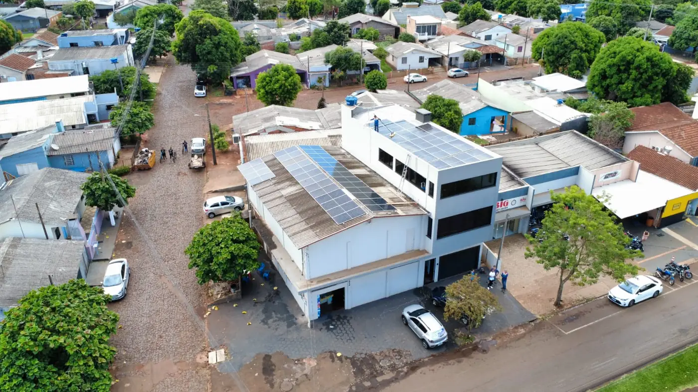
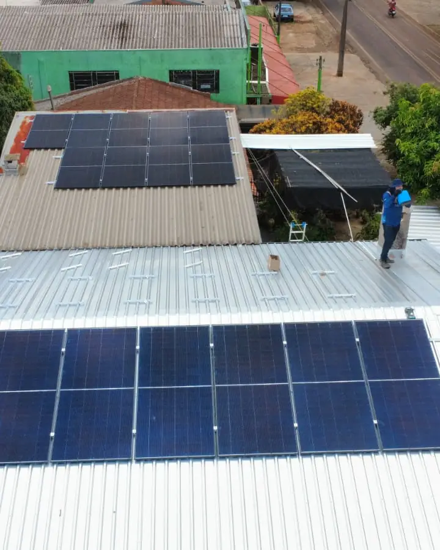

Clientes
Clientes atendidos pela M&A
Registros de entrega feitos pela nossa equipe.



Atendemos São Miguel do Iguaçu com equipe própria, a partir da nossa sede em Medianeira. Projeto elétrico assinado, ART no CREA-PR e homologação completa junto à Copel - do protocolo inicial até a troca do medidor bidirecional. Orçamento calculado a partir da sua fatura real, sem estimativa de tabela.
Resposta em poucos minutos no horário comercialTodo orçamento da M&A começa pela fatura de energia. Os doze últimos meses de consumo mostram quanto o imóvel gasta em cada época do ano, e é esse histórico que define a potência do sistema. Sem a fatura, qualquer valor é chute.
Em São Miguel do Iguaçu, a economia local é marcada por grãos, pecuária, turismo de Itaipu. Isso aparece nas contas: uma atividade rural mantém carga ao longo do dia, enquanto uma casa na cidade concentra o consumo no fim do dia. Cada perfil pede um dimensionamento diferente, e por isso não trabalhamos com tabela de preço por tamanho de casa.
O tipo de telhado também entra na conta. Na região, o telhado predominante é cerâmica e fibrocimento, e cada cobertura usa uma estrutura de fixação própria, com custo e tempo de montagem diferentes.
O primeiro valor que enviamos é um pré-orçamento, feito a distância. O valor final é confirmado depois da visita técnica, quando conferimos o padrão de entrada, a distância até o quadro de energia e os pontos de sombra.
Envie uma foto da sua fatura de energia. Devolvemos o cálculo de economia, o investimento estimado e o tempo de retorno para São Miguel do Iguaçu e região.
Enviar minha conta de luz
O consumo de energia em São Miguel do Iguaçu não é uniforme ao longo do ano. O perfil de grãos, pecuária, turismo de Itaipu cria picos em determinadas épocas - safra, período de resfriamento, alta temporada turística - e vales em outros meses. Ignorar essa sazonalidade no dimensionamento é o erro mais comum e o que mais prejudica o retorno do investimento.
Um sistema subdimensionado não cobre o pico de consumo; um superdimensionado gera crédito que expira sem ser usado - o prazo de validade dos créditos de energia injetados na rede é de 60 meses, mas poucos consumidores têm patamar de consumo suficiente para compensar excedentes muito grandes.
O dimensionamento correto parte dos doze meses de histórico de consumo, não de uma média anual. A M&A analisa mês a mês para identificar os picos, calibrar a potência instalada e estimar a geração de créditos nos meses de menor consumo, que serão usados exatamente nos meses de maior demanda.
Em São Miguel do Iguaçu, a irradiação solar varia entre 4,7 e 5,1 kWh/m²/dia ao longo do ano. O dimensionamento considera essa variação junto com a sazonalidade do consumo local, entregando um sistema que compensa o histórico real - não uma estimativa otimista baseada apenas nos meses de sol pleno.
Uma proposta com uma linha e um valor final não permite comparar nem conferir depois. A nossa detalha seis pontos.
Potência total em kWp, com marca, modelo e quantidade dos módulos e do inversor. Sem a expressão “kit solar” no lugar da especificação.
Estimativa de geração para cada mês do ano, considerando a orientação e a inclinação do seu telhado, e não uma média anual genérica.
Quanto a fatura deve cair e quanto continua sendo cobrado: custo de disponibilidade, iluminação pública e a parcela do Fio B.
Valor separado por equipamentos, estrutura de fixação, proteções elétricas, instalação, projeto e homologação.
Payback calculado com a tarifa atual da Copel e com o seu perfil de consumo. Se os números não fecharem a seu favor, avisamos antes do contrato.
Prazo de garantia de cada equipamento e da instalação, e a lista do que está e do que não está incluído no valor.
Três perfis de consumo comuns na região, com potência, economia mensal projetada e prazo de retorno estimados para dar ordem de grandeza; o seu projeto é calculado com a sua fatura.
Consumo de 400 kWh por mês. O orçamento indica um sistema de cerca de 4,2 kWp, com economia projetada próxima de R$ 340 por mês e retorno em torno de 5 anos.
Consumo de 2.800 kWh por mês, com carga ao longo do dia. O orçamento indica cerca de 28 kWp, com economia projetada próxima de R$ 2.380 por mês. Pode se enquadrar em linhas de crédito rural.
Consumo de 900 kWh por mês, em horário comercial. O orçamento indica cerca de 9 kWp, com economia projetada próxima de R$ 765 por mês. O uso diurno favorece o retorno.
Nesse patamar, o sistema costuma se pagar em menos de cinco anos. Vale calcular antes do próximo reajuste da Copel.
Em outubro de 2026, a ANEEL registrava 2.782 sistemas de energia solar conectados à rede em São Miguel do Iguaçu, somando 59,3 MW de potência instalada.
A potência típica de um sistema residencial em São Miguel do Iguaçu é de 5,6 kW (mediana). No comércio, 24,0 kW, e no campo, 10,0 kW. São valores do que já foi instalado na cidade, e servem como ordem de grandeza: o seu orçamento depende da sua fatura.
A irradiação solar média em São Miguel do Iguaçu, medida no plano horizontal, é de 4,89 kWh/m² por dia. Em dezembro chega a 6,55 e em junho cai para 2,93. A geração acompanha essa variação: é maior no verão e menor no inverno. Por isso o dimensionamento usa o ano inteiro, e os créditos do verão cobrem o inverno.
Fontes: ANEEL, Relação de Empreendimentos de Geração Distribuída (dados de outubro de 2026); NASA POWER, climatologia de irradiação solar.
Garantia de 30 anos só tem valor se existir estrutura para acionar. Trabalhamos com fabricantes que mantêm suporte em território nacional.
Na proposta, o módulo vem com marca, modelo e ficha técnica. Trabalhamos hoje com modelos de 620 W (Ronma, Gokin e ERA); um sistema de 6,2 kWp usa 10 deles. Ao comparar propostas, confira a garantia: aqui são 15 anos contra defeito e 30 de desempenho.
O inversor é escolhido pela potência do sistema e pelo padrão de entrada. Em rede monofásica de 220 V usamos Sofar de 5 kW ou 10,5 kW e Auxsol de 7,5 kW, com eficiência máxima de 97,8% a 98,4% e proteção contra ilhamento, exigida para ligar à rede.
Alumínio anodizado e parafusos em inox 304, dimensionados para a carga de vento da região conforme NBR 6123. Fixação sem furo desnecessário.
String box com DPS, fusíveis e disjuntores conforme NBR 16690 e exigências da Copel. É o item que a concorrência mais corta para baixar preço.
Aplicativo com geração em tempo real, histórico por período e alerta automático em caso de falha. Você acompanha do celular e nossa equipe recebe o mesmo alerta.
Cabos com dupla isolação e proteção UV, conectores MC4 originais e crimpagem com ferramenta específica. Sem emenda improvisada exposta ao sol.
Veja as marcas e os modelos de módulos e inversores que instalamos hoje
Cinco passos, sem custo e sem compromisso até a proposta final.
Você manda uma foto da conta de luz pelo WhatsApp. Se tiver as doze últimas, melhor: o histórico completo deixa o cálculo mais preciso.
Com o consumo e o tipo de ligação, calculamos a potência indicada e uma primeira faixa de investimento e de economia.
Vamos até o imóvel em São Miguel do Iguaçu para medir o telhado, avaliar a estrutura, conferir o padrão de entrada e mapear sombras.
Você recebe a proposta completa, com equipamentos especificados, geração mês a mês, investimento detalhado e prazo de retorno.
Definido o projeto, apresentamos as formas de pagamento e ajudamos na documentação técnica exigida pelo banco, se houver financiamento.
Registros de entrega feitos pela nossa equipe.
A M&A Soluções Energéticas atende São Miguel do Iguaçu com equipe própria, a partir da nossa sede em Medianeira. O deslocamento não gera sobretaxa: a visita técnica, a instalação e o comissionamento são realizados em dias consecutivos sem custo adicional para o cliente. A mão de obra da instalação tem garantia de 5 anos. O prazo final depende da Copel. A finalização do nosso serviço leva em torno de 45 a 60 dias.
O Oeste do Paraná tem condição de irradiação solar bastante favorável - média de 4,7 a 5,1 kWh/m²/dia ao longo do ano, superior à maioria dos países europeus onde a tecnologia já é amplamente consolidada. Em São Miguel do Iguaçu, com perfil de grãos, essa irradiação é suficiente para compensar com folga o consumo anual da maioria dos perfis de instalação.
Além de São Miguel do Iguaçu, atendemos com a mesma equipe as seguintes localidades:
Não encontrou sua localidade? Entre em contato mesmo assim - atendemos com frequência municípios vizinhos e, dependendo do porte do projeto, o deslocamento não altera o investimento final.
Comparar só o valor final leva a escolhas ruins. Quatro números permitem pôr duas propostas lado a lado.
Divida o valor total pela potência em kWp. O resultado só é comparável quando as duas propostas têm o mesmo escopo: equipamentos, estrutura, proteções, instalação, projeto e homologação.
Dois sistemas com a mesma potência podem ter estimativas de geração diferentes. Desconfie de uma geração muito acima das demais para o mesmo telhado: ela melhora o payback no papel e não se confirma na fatura.
Verifique se o fabricante dos módulos e do inversor tem assistência no Brasil. Garantia de 30 anos sem estrutura para atender no país vale pouco.
String box com DPS, fusíveis e disjuntores conforme a NBR 16690 é o item mais cortado para baixar preço. Peça que venha discriminado.
Se você já recebeu uma proposta de outra empresa para São Miguel do Iguaçu ou cidades vizinhas como Medianeira e Missal, a M&A analisa gratuitamente pelo WhatsApp: conferimos o dimensionamento, os equipamentos e as proteções, sem compromisso de fechar conosco.
Envie sua fatura pelo WhatsApp. Você recebe o estudo de viabilidade completo - sem custo e sem compromisso - com a economia projetada e o tempo de retorno do investimento.
Solicitar orçamento gratuito Atendimento humano · Seg a Sex · 8h às 18h · Sáb 8h às 12h